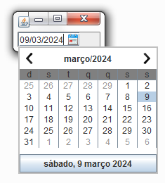

| Arquivo: JavaTeste.java |
| import javax.swing.*; import java.awt.*; import java.awt.event.*; import thiagoventurelli.dateutils.dateedit.*; public class JavaTeste extends JFrame { public JavaTeste() { JFrame frame = new JFrame("DateUtils - 0.9"); frame.setLocation(500, 200); // ---------------- // Calendario // ---------------- DateEdit dateEdit = new DateEdit( frame ); // ---------------- frame.setContentPane( dateEdit ); frame.pack(); frame.setVisible( true ); frame.setDefaultCloseOperation( JFrame.EXIT_ON_CLOSE ); } public static void main(String[] args) { new JavaTeste(); } } |
| Arquivo: dateutils-0.9.jar |
| <<dateutils-0.9.jar>> |
| Arquivo: java-comp.bat |
| javac -classpath dateutils-0.9.jar; JavaTeste.java |
| Arquivo: java-exec.bat |
| java -classpath dateutils-0.9.jar; JavaTeste |